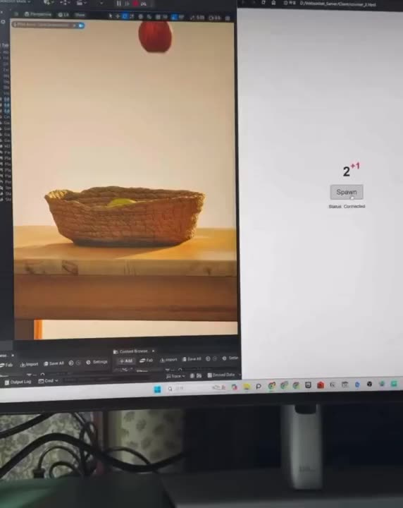
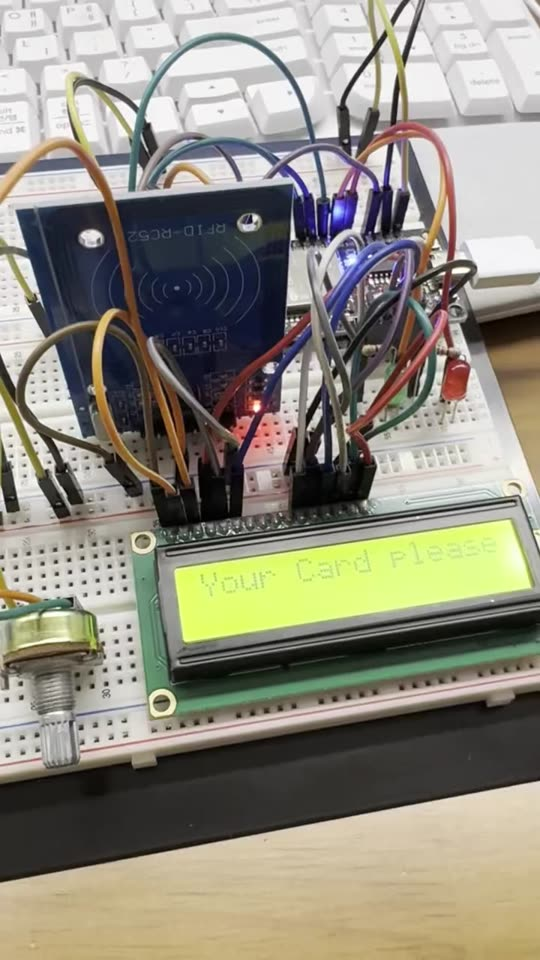
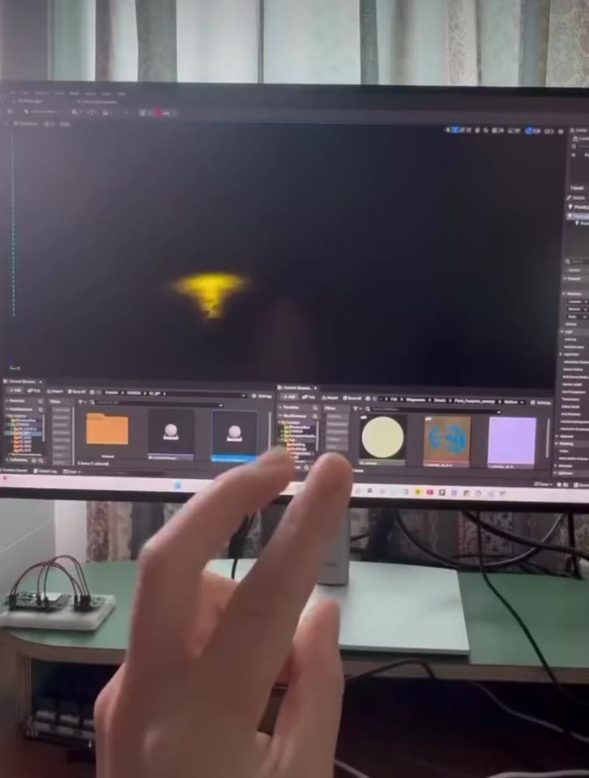
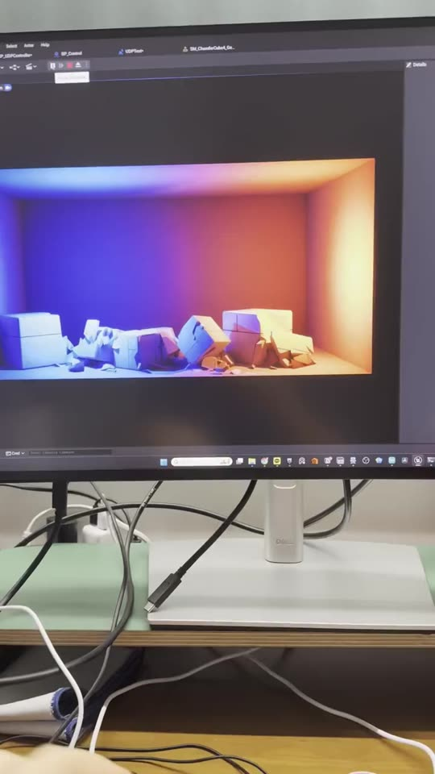
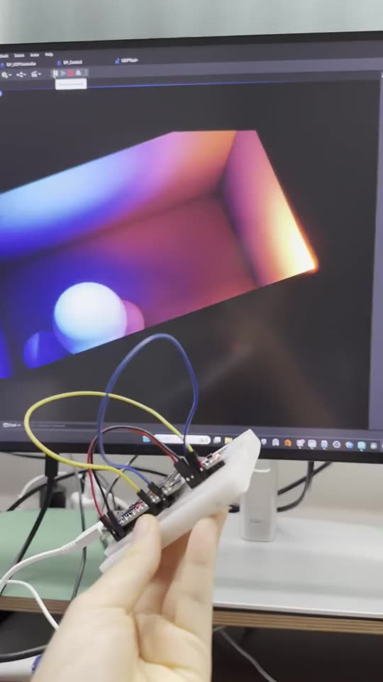
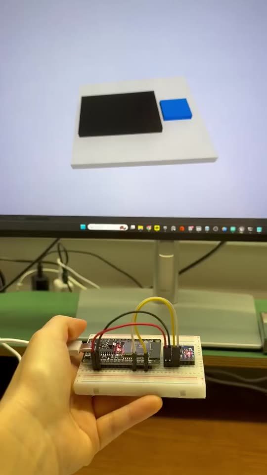
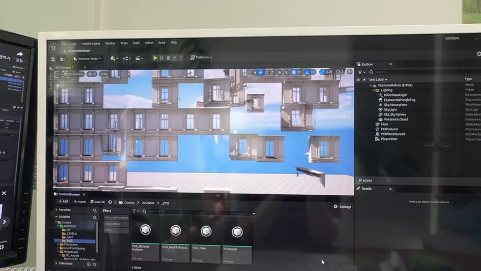

How do familiar objects changeour experience of space? How do familiar actionschange our experience of space?
8 studies · 0 images

2025.02

2024.11


2024.08


2024.07

2024.04
No study matches these filters.